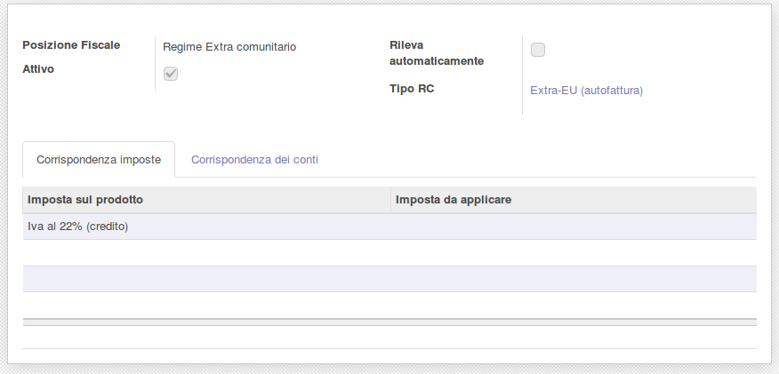

Inversione contabile

Sommario non disponibile
Unknown description_img
Italiano
Modulo per gestire l'inversione contabile (reverse charge) nelle fatture fornitore.
Il modulo permette di automatizzare le registrazioni contabili derivate dalle fatture fornitori intra UE ed extra UE mediante l'inversione contabile IVA. Inoltre è automatizzata la procedura di annullamento e riapertura della fattura fornitore.
È inoltre possibile utilizzare la modalità "con autofattura fornitore aggiuntiva". Questa modalità è usata tipicamente per i fornitori extra UE per mostrare, nel registro IVA acquisti, una fattura intestata alla propria azienda (autofattura passiva). L'autofattura passiva verrà poi totalmente riconciliata con l'autofattura attiva, anch'essa intestata alla propria azienda.
Con il tipo "Autofattura di riscontro" la fattura fornitore è registrata come una normale fattura di acquisto, senza righe di inversione contabile. L'autofattura di vendita è comunque generata, ma non è riconciliata con la fattura fornitore: tutte le sue righe, IVA compresa, sono registrate sul conto credito dello stesso partner, quindi l'autofattura si neutralizza da sola (dare = avere).
English
Module to handle reverse charge IVA in vendor bills.
The module allows you to automate the accounting entries derived from invoices of intra-EU and extra-EU suppliers through the VAT reverse charge. Furthermore, the vendor bill cancellation and reopening procedure is automated.
It is also possible to use the "additional vendor self billing" mode. This mode is typically used for non-EU suppliers to show, in the purchases VAT journal, a vendor bill addressed to your own company (self-bill). The self-bill will then be completely reconciled with the self-invoice, which is also addressed to your own company.
With the "Autofattura di riscontro" (matching self invoice) type, the vendor bill is posted as a plain purchase invoice, without reverse charge lines. The sale self invoice is still generated, but it is not reconciled with the vendor bill: all its lines, VAT included, are posted on the receivable account of the same partner, so the self invoice neutralizes itself (debit = credit).
Nessuna informazione disponibile
Italiano
Creare l'imposta 22% intra UE - Vendite:
Creare l'imposta 22% intra UE - Acquisti: Creare l'imposta 22% extra UE - Vendite: Creare l'imposta 22% extra UE - Acquisti: Creare il conto 'Transitorio autofatturazione': Il 'Registro pagamento autofattura' deve essere configurato con il conto 'Transitorio autofatturazione' appena creato: Modificare il tipo inversione contabile Intra-UE (autofattura): Il registro autofattura deve essere di tipo 'Vendita'. Modificare il tipo inversione contabile Extra-UE (autofattura): Il 'Registro autofattura passiva' deve essere di tipo 'Acquisto'. Nella posizione fiscale, impostare il tipo inversione contabile: Per il tipo "Autofattura di riscontro" impostare nella posizione fiscale anche "Tipo di Partner" e "Registro per autofattura". Come per le altre autofatture, sono riportate nell'autofattura le righe con flag RC, cioè con imposta di acquisto con "Tipo reverse charge" impostato; il "Codice iva vendite" dell'imposta è applicato all'autofattura. Nelle fatture fornitore con posizione fiscale "Autofattura di riscontro" è segnalato errore se si imposta un codice IVA senza "Tipo reverse charge"; è accettato qualsiasi tipo reverse charge. English Create the tax 22% intra EU - Sale: Create the tax 22% intra EU - Purchase: Create the tax 22% extra EU - Sale: Create the tax 22% extra EU - Purchase: Create the account 'Self Invoice Transitory' as follows: The 'Self Invoice Payment' Journal has to be configured with the just created 'Self Invoice Transitory' account: Edit the reverse charge type Intra-EU (self-invoice): The Self Invoice journal has to be of type 'Sale'. Edit the reverse charge type Extra-EU (self-invoice) : The 'Supplier Self Invoice Journal' has to be of type 'Purchase'. In the fiscal position, set the reverse charge type: For the "Autofattura di riscontro" (matching self invoice) type, set also "Partner type" and "Self invoice journal" in the fiscal position. As for the other self invoices, the self invoice contains the lines with RC flag, i.e. with a purchase tax whose "Reverse charge type" is set; the tax "Sale tax" (Codice iva vendite) is applied on the self invoice. In vendor bills with "Autofattura di riscontro" fiscal position, an error is raised when a tax without "Reverse charge type" is set; any reverse charge type is accepted.

Creare l'imposta 22% intra UE - Vendite:
Creare l'imposta 22% intra UE - Acquisti: Creare l'imposta 22% extra UE - Vendite: Creare l'imposta 22% extra UE - Acquisti: Creare il conto 'Transitorio autofatturazione': Il 'Registro pagamento autofattura' deve essere configurato con il conto 'Transitorio autofatturazione' appena creato: Modificare il tipo inversione contabile Intra-UE (autofattura): Il registro autofattura deve essere di tipo 'Vendita'. Modificare il tipo inversione contabile Extra-UE (autofattura): Il 'Registro autofattura passiva' deve essere di tipo 'Acquisto'. Nella posizione fiscale, impostare il tipo inversione contabile:

Authors | Autori:
Contributors | Partecipanti:
This module is maintained by the SHS_AV s.r.l..
This module is part of l10n-italy project.
Published information on | Informazioni pubblicate: 2026-10-20